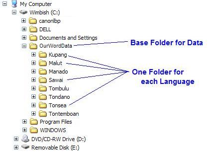
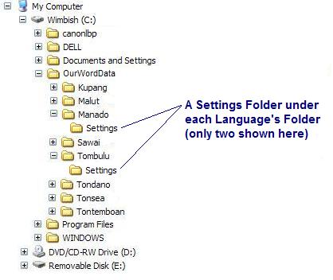
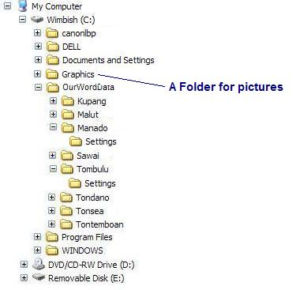

OurWord Help
File
Management
This article describes a strategy for dealing with a situation where a front translation is serving several languages at once, and where these daughter languages each have computers whose files need to be kept in synchronization, e.g., :
It reflects lessons learned from two language clusters which were initial users of OurWord. You will also want to review Settings Management for an understanding of how OurWord handles its settings files.
Note that now that OurWord 1.0 supports relative pathnames, this strategy is less important to follow than it was in previous versions of OurWord. However, we still include it here as several concepts, especially administrators vs limited users, might be helpful.
We highly recommend that only a handful of people on the team have access and authority to make changes, such as installing software, etc. This will make each computer much more stable, especially if users are less computer literate. Keep in mind that it may not be the translator who is the danger to the computer, files, and project, but rather their hacker nieces and nephews who can unknowingly trash a whole translation or introduce viruses.
Users are set up through the Control Panel-User Accounts. We recommend that you password protect the Administrator; you may also wish to password protect the Limited users. Refer to your Windows documentation for more information.
Probably the key concept here is to place the data right off the C: drive, as opposed to using My Documents. The problem with My Documents is that it introduces differences to path names on various computers, e.g., the full paths on your computers will differ along the lines of:
Instead, if you place the data directly on the C: drive, you get a folder along the lines of:
This can thus be copied from machine to machine, without ever having any problems with resolving pathnames. (Actually, OurWord handles relative pathnames, so a My Documents solution should work if it is the only software you are using. But you are likely to run into problems with other software; whereas coming off of "C:\" is guaranteed to remove any potential problems.)
OurWord does not care what you name the base folder. You can use "OurWordData", or you can use something more appropriate to your context.
Important: You will need to give your limited users access to this folder. While logged in as an Administrator, open the Windows Explorer and right-click over the folder, then choose Properties. Via this Properties Dialog, you can grant all of your users read and write access.
If you are on a network, it may also be useful to share the folder for convenient access. I recommend that you share it with the language name, e.g., so that it appears as "OurWordData-Tombulu" on the network.
Given that we now have a base folder at C:\, the next step is to create subfolders for each language, thus:

I prefer to hide settings files; I feel they are annoying to see when browsing for files. If you are using Toolbox (Shoebox) together with OurWord, you are likely to have numerous settings files. I tend to thus create a Settings folder underneath each language, e.g.,

Under these settings folders, you will want to save the Project (OWP) and Translation (OTRANS) files that you create through OURWORD. Thus, for example, the project file for the Tombulu language would have the path:
And the translation description file would be:
I recommend that you create a separate folder under C:\ to hold the pictures. This can be something like
Here, you will place the pictures that you will use in Scripture.
Note: OurWord (and most Windows programs nowadays) no longer support the PCX format, so if you have such pictures, you will need to convert them to another format (such as TIF or JPEG).
In your Scripture files, you will then have paths to these pictures. This will be something like:
Again, by placing these all at C:\ rather than in My Documents, none of the software you use will have any trouble resolving the pathnames to locate these pictures.

You will want to choose one computer that will serve as the master. The process will be that you are continually "harvesting" files from the individual languages onto the master; and then copying the entire OurWordData folder from the master back down to the individual computers.
The Master will also be the one you will want to have a backup process working for.
7.1 Harvesting Data. Periodically, you will want to collect data from the individual languages. In a networked office situation, this can be done frequently; if you are in the situation where translators are carrying their laptops away for months at a time, then you will not be able to do this as often.
After copying the files from a team computer, it is wise to increment the filenames of all books still in process. This avoids accidental overwrite of files if the translator has forgotten to increment a file after working on it.
7.1 Setup a new language. To set up a new language, or to change the setup for an existing language:
7.1 Update individual computers. To update the computers in the project, you mainly only need to copy the OurWordData file from the Master Computer onto their C:\ drive.
On the Master Computer, you may also want to create an additional base folder, e.g., OurWordDataArchive, in which you store older files. Thus when a Scripture file's status is upgraded from "Draft" to "Consultant Check", you can keep the older copies of these files around for future reference.
You would typically not place these in the normal OurWordData folder, because this would just provide clutter, as well as increase the time needed to do the computer updates.
Updated as of Version 1.0.